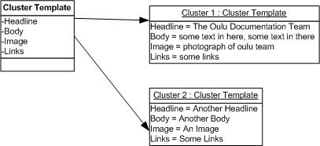

Defining cluster
Cluster is an aggregation of contents specified by the cluster template. A
cluster template is a form that enables you to create structure for your site
and define the type of contents. Afterwards, it can be used for creating page
templates.Cluster=structure+content

Previous:
Creating a homepage
Next: Defining position